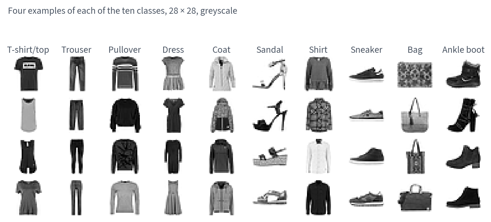
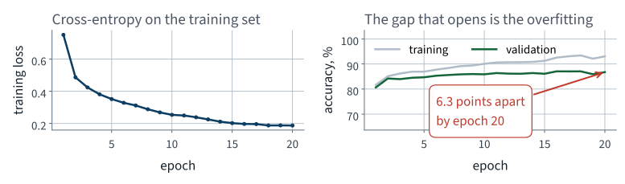
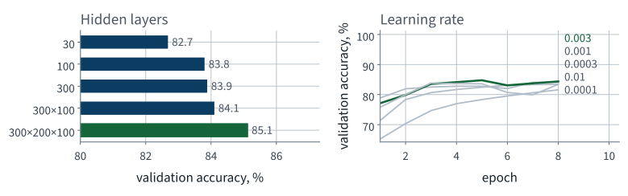
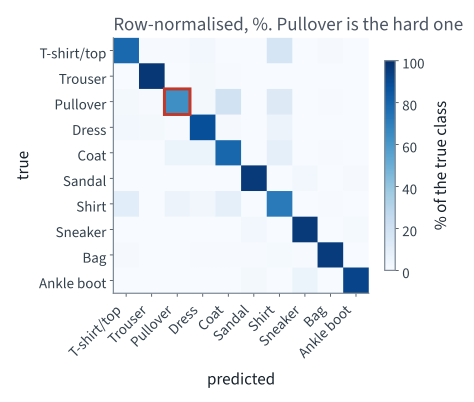

Fashion-MNIST
Lecture 9 Géron Ch. 9
Applications of Machine Learning
BSc Mathematics of Artificial Intelligence · Third year
| Part | Lectures | Chapters | Hardware |
|---|---|---|---|
| I · Tabular data and classical models | 1–8 | 1–8 | CPU |
| II · Neural networks | 9–11 | 9–11 | CPU |
| III · Computer vision | 12–14 | 12 | CPU |
| IV · Sequences and language | 15–18 | 13–15 | CPU |
| V · Search and recommendation | 19–22 | — | CPU |
| VI · Multimodal models | 23–24 | 15–16 | CPU |
Part I ended without labels: four hundred faces compressed by PCA — the SVD of the centred data, whose error is the tail of the spectrum — then clustered by k-means with $k$ chosen by silhouette, and forty labels spent on cluster representatives. Today the labels are back, and the model is new.
Every notebook in this course runs on Colab’s free CPU tier. The corpora are subsampled and the networks are small enough to train there — deliberately, so that every result on a slide is one you can reproduce rather than one you must take on trust.
MLPClassifier cannot do, and why the next lecture
existsA document-processing bureau scans incoming items and routes each one to one of ten queues.
Ten classes, one label each, no ranking, no probability requirement stated. Write that down: it decides the output layer.
The bureau’s archive is confidential. Fashion MNIST is the dataset Chapter 9 uses, and it has the same shape of problem: small greyscale images, ten classes, one label each.
| Property | Value |
|---|---|
| Training images | 60,000 |
| Test images (shipped as a test set) | 10,000 |
| Image size | 28 × 28 |
| Features per image, flattened | 784 |
| Pixel values | 0–255, integer |
| Classes | 10 |
The test split is the one the dataset ships with, so your number is comparable with every published result on it.
Measured on one run of this lecture’s notebook; hardware, library versions and random seeds can make a re-run differ slightly.

Pullover, coat and shirt are one silhouette at this resolution — and that is where the errors will be.
Three of these are upper-body garments seen from the front. Ask the room which three, before the model tells you.
We flatten each 28 × 28 image into a vector of 784 numbers and hand it to the model as an ordinary table of features.
That is a real loss, and repairing it is Chapter 12 — four lectures away. Today we pay it, and it is the honest starting point.
Measured on one run of this lecture’s notebook; hardware, library versions and random seeds can make a re-run differ slightly.
Divide by 255, so every feature lies in $[0, 1]$.
StandardScaler estimates a mean and a variance from data
and must therefore be fitted after the split. x / 255 estimates
nothing.
Measured on one run of this lecture’s notebook; hardware, library versions and random seeds can make a re-run differ slightly.
| Set | Images | Used for |
|---|---|---|
| Training | 55,000 | fitting the weights |
| Validation | 5,000 | choosing hyperparameters, by hand, today |
| Test | 10,000 | once, at the very end |
The validation set is carved out of the training half with a fixed seed. It exists because we are about to try ten configurations, and a number chosen on the set it is reported on is optimistic. The model is fitted on the first 12,000 of the 55,000, so the whole lecture runs on a free CPU; every number from here on is from that run.
McCulloch and Pitts, 1943: a very simplified model of a biological neuron, which fires when enough of its inputs fire.
Chapter 9 opens with this and then drops it. So do we.
One unit computes a weighted sum of its inputs plus a bias, then an activation: $h = \phi(\mathbf{w}^{\mathsf T}\mathbf{x} + b)$. Units are arranged in layers:
Fully connected, or dense: every unit of one layer receives every unit of the previous one. That is where the parameters are.
Two or more hidden layers and the book calls it a deep neural network. The word means nothing more than that.
Suppose the activation were the identity. Then
A single affine map. Two hundred stacked layers would still be a single affine map.
Depth buys you nothing without a nonlinearity between the layers. This is one line of algebra and it is the reason activation functions exist at all.
| Activation | Range | Cost | Problem |
|---|---|---|---|
| Sigmoid | $(0, 1)$ | an exponential | saturates at both ends |
| tanh | $(-1, 1)$ | an exponential | saturates at both ends |
| ReLU | $[0, \infty)$ | a comparison | flat below zero |
max(0, z) is fast, does not saturate above, and
in practice trains better. It is the default in Chapter 10 and it is our
default today.
“Flat below zero” is a real defect and it has a name — dying ReLUs. It is diagnosed in Lecture 11, not here.
The whole forward pass is a handful of matrix products. That is why a GPU helps at all: a GPU is a machine for doing exactly this.
Animation
784 x 300 + 300 = 235,500 layer 1
300 x 100 + 100 = 30,100 layer 2
100 x 10 + 10 = 1,010 output
--------
266,610 total
266,610 parameters, fitted from 12,000 images.
Measured on one run of this lecture’s notebook; hardware, library versions and random seeds can make a re-run differ slightly.
Ten classes, mutually exclusive. Ten output units, and a softmax across them:
argmax is unchanged by the softmaxThe full properties of softmax — shift invariance, the gradient, why the loss consumes logits rather than probabilities — are derived in Lecture 17.
The target is one-hot, so nine of the ten terms are zero. The loss is minus the log probability the model assigned to the right answer, and it goes to infinity as that probability goes to zero.
Chapter 4 called this log loss when there were two classes. Same object.
Backpropagation: one forward pass to compute the loss, one backward pass to compute every partial derivative, one gradient-descent step.
Measured on one run of this lecture’s notebook; hardware, library versions and random seeds can make a re-run differ slightly.
| Task | Output units | Output activation | Loss |
|---|---|---|---|
| Binary | 1 | sigmoid | binary cross-entropy |
| Multilabel binary | one per label | sigmoid | binary cross-entropy |
| Multiclass | one per class | softmax | cross-entropy |
Our task is the third row: ten mutually exclusive classes, so ten units, softmax, cross-entropy.
The distinction between rows two and three is not cosmetic. Multilabel asks ten independent yes/no questions; multiclass asks one ten-way question. Softmax couples the outputs; ten sigmoids do not.
not examinable — engineering The numbers depend on the corpus. The method for finding them does not.
The operator asked: how often is it right?
That is accuracy. Lecture 3 spent a whole lecture on why accuracy is a trap — so before using it, check the condition under which it failed.
| Lecture 3 | Today |
|---|---|
| One class held 10% of the data or worse | Every class holds exactly 10% |
| “Always negative” scored above 90% | “Always k” scores 10.0% |
| Accuracy hid a useless model | Accuracy cannot hide one |
The rule you keep is not “never use accuracy”. It is count the classes first.
Measured on one run of this lecture’s notebook; hardware, library versions and random seeds can make a re-run differ slightly.
majority = np.bincount(y_fit).argmax()
baseline = np.full(len(y_test), majority)
print(accuracy_score(y_test, baseline)) # 0.1
Ten classes, 1,000 test images each, one guess for every image.
Not an estimate and not a convention — a measurement, and it happens to be exact.
from sklearn.neural_network import MLPClassifier
clf = MLPClassifier(hidden_layer_sizes=(300, 100),
activation="relu",
solver="adam",
learning_rate_init=1e-3,
batch_size=128,
max_iter=20,
random_state=42)
clf.fit(X_fit, y_fit)
Nine lines, and every architectural decision so far is one
of the arguments. The softmax and the cross-entropy are not
arguments — MLPClassifier chooses them for you, from the
number of classes it sees in y_fit.
| Quantity | Measured |
|---|---|
| Training images | 12,000 |
| Epochs | 20 |
| Wall clock, CPU | 6 s |
| Validation accuracy | 86.74% |
| Test accuracy | 85.63% |
| Baseline | 10.0% |
It works. Hold on to the wall clock — the next lecture times the same model, written in PyTorch.
Measured on one run of this lecture’s notebook; hardware, library versions and random seeds can make a re-run differ slightly.

The two accuracy curves separate and stay separated. That gap is overfitting: the training-versus-validation gap, drawn as lines.

Ten fits on a 6,000-image subset for 8 epochs, so they fit in the lecture: five architectures, then five learning rates. The architectures span 2.4 accuracy points and the learning rates 2.8. The deepest network wins, and the default learning rate does not.
| Hidden layers | Parameters | Validation | Seconds |
|---|---|---|---|
| 30 | 23,860 | 82.68% | 0.3 |
| 100 | 79,510 | 83.80% | 0.5 |
| 300 | 238,510 | 83.88% | 1.2 |
| 300, 100 | 266,610 | 84.10% | 1.7 |
| 300, 200, 100 | 316,810 | 85.12% | 2.2 |
| Learning rate | Validation |
|---|---|
| 0.0001 | 81.58% |
| 0.0003 | 83.46% |
| 0.001 — default | 84.10% |
| 0.003 | 84.36% |
| 0.01 | 83.40% |
On this subset depth pays, a little: a second hidden layer adds about a fifth of a point, and a third about a point more, for a fifth more parameters — and the deepest is also the slowest.
The learning rates are swept on the (300, 100) network, with the same data and seed: only the size of the step changes, and the library’s default is not the best value on this grid.
Measured on one run of this lecture’s notebook; hardware, library versions and random seeds can make a re-run differ slightly.
Point 3 is the one to remember. You have not optimised anything; you have looked at ten places.
| Hidden layers | 6,000 images, 8 epochs | 12,000 images, 20 epochs |
|---|---|---|
| 30 | 82.68% | 85.38% |
| 100 | 83.80% | 86.26% |
| 300 | 83.88% | 86.58% |
| 300, 100 | 84.10% | 86.74% |
| 300, 200, 100 | 85.12% | 87.14% |
Here it does: the same order at both scales. Each architecture gains two to three points from the larger run — as much as the whole spread between the five on either.
Measured on one run of this lecture’s notebook; hardware, library versions and random seeds can make a re-run differ slightly.
Split it. Lecture 3 built the confusion matrix for two classes; the object generalises without change.
from sklearn.metrics import confusion_matrix
cm = confusion_matrix(y_test, clf.predict(X_test))
recall = cm.diagonal() / cm.sum(axis=1) # one per class
Ten rows, ten columns. Row $i$, column $j$ counts the images of class $i$ the model called class $j$.

Four upper-body classes are far worse than the other six, and their errors go to a few specific neighbours.
Recall on Pullover: 63.6%, against 97.2% on Trouser.
| Pullovers are called… | Share of all pullovers |
|---|---|
| Coat | 18.8% |
| Shirt | 12.7% |
| Dress | 2.0% |
Coat and Shirt, two of the three the room named from the image grid, take 31.5 of the 36.4 points it loses — and Shirt is the next-worst class itself, at 71.1%. The model is not confused about anything a person would find easy.
Measured on one run of this lecture’s notebook; hardware, library versions and random seeds can make a re-run differ slightly.
The headline accuracy does not answer the operator’s question. The per-class breakdown does, and it took one extra function call.
Measured on one run of this lecture’s notebook; hardware, library versions and random seeds can make a re-run differ slightly.
Four things you will want, in the order you will want them.
Try each one now, in the notebook, before the next slide.
6 s
20 epochs, 12,000 images, 266,610 parameters, one CPU.
Small here — and it grows in step with the data and the epochs, on the same single core, however large the job becomes.
device=
Scikit-Learn does not support GPUs, and says so in its own FAQ: it is a
deliberate scope decision, not an oversight. PyTorch, from the next lecture,
gives you the choice — and Lecture 10 measures what it is worth.
On this network, less than a factor of two.
Measured on one run of this lecture’s notebook; hardware, library versions and random seeds can make a re-run differ slightly.
>>> MLPClassifier(hidden_layer_sizes=(300, 100), loss="mae")
TypeError: MLPClassifier.__init__() got an unexpected
keyword argument 'loss'
Cross-entropy is hard-coded. That is fine until the operator says “calling a coat a shirt is cheap, calling a bag a sandal is expensive” — a weighted loss, which is one line in a framework that lets you write one.
And that is the ordinary case, not an exotic one.
>>> [a for a in dir(clf) if "grad" in a.lower()]
[]
Backpropagation ran 20 times per image and computed 266,610 partial derivatives on every batch. None of them was kept.
Measured on one run of this lecture’s notebook; hardware, library versions and random seeds can make a re-run differ slightly.
>>> inspect.signature(MLPClassifier.partial_fit)
(self, X, y, classes=None)
partial_fit is the finest handle there is, and one call is one
complete pass over everything you hand it.
fit() contains a for loop over epochs and batches
that you did not write, cannot see, and cannot enter. Every one of the four
walls is the same wall.
This is not a criticism of Scikit-Learn.
MLPClassifier is documented as a convenience, and for a tabular
problem with a standard loss it is the right tool. It is the wrong tool from
here on, and now you know precisely why.
fit() puts round youidentity — and
refit. Accuracy collapses towards what a linear model gets, which is the
one line of algebra on “Why there must be a nonlinearity”,
measured.
MLPClassifier, tuned
it by hand, and split the accuracy by classMeasured on one run of this lecture’s notebook; hardware, library versions and random seeds can make a re-run differ slightly.
Not presented — for afterwards
five, in the style of the written paper
Solutions on Lecture 10’s deck.
Solutions on Lecture 10’s deck.
The five set at the end of Lecture 8
not part of this lecture
1. PCA is derived by maximising $\|XW\|_F^2$ subject to $W^{\mathsf T}W=I$. State why the data must be centred…
Without centring the leading direction points at the mean, not at the direction of greatest variance.
2. The explained variance ratio is sometimes called a heuristic for choosing $d$. Using the result of the PCA…
The principal subspace leaves exactly $\sum_{j>d}\sigma_j^2$, so $\sum_{j\le d} r_j$ is exactly the fraction of squared error removed. Keeping 95% of the variance leaves 5% of the total squared error of the centred data.
3. A pipeline fits PCA on the whole dataset and then splits. Name what leaked, and say which held-out number the…
The components leaked. It flatters the held-out reconstruction error and leaves the downstream accuracy unchanged.
4. Inertia always falls as $k$ rises, so it cannot choose $k$. State what silhouette adds, and one situation…
Silhouette compares within-cluster to nearest-other-cluster distance, so it is penalised for splitting a group and for merging two, and has an interior maximum. It fails to decide when the clusters overlap with no clean gaps: every knife is short and the curve is nearly flat near its maximum.
5. You have 4,096-dimensional face vectors and are told two faces are “close”. Explain why that…
Distance is not identity — lighting and pose move a face further than identity does.
Lecture 10 · Géron Ch. 10
Backpropagation as reverse-mode automatic differentiation, derived
What the wrapper costs, measured: the clock, and when an accelerator pays
Tensors, autograd, and the training loop written out in full
Two bugs that never raise an exception
Run the Lecture 9 notebook first